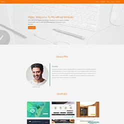
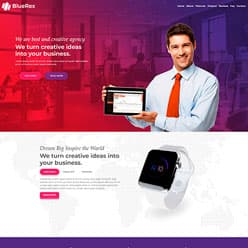
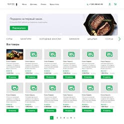
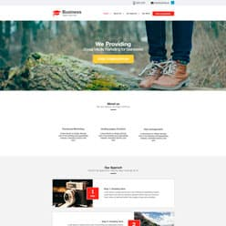
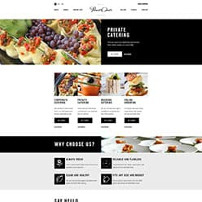
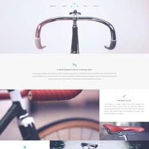
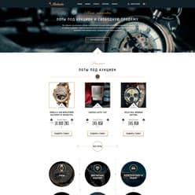
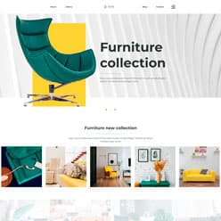
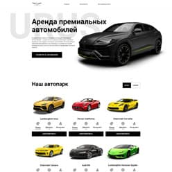
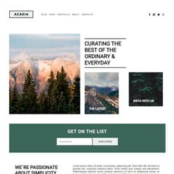

-

Страница свёрстана по публикации Learn Bootstrap 4 in 30 minutes by building a landing page website ( https://
medium.com/ free-code-camp/ learn-bootstrap-4-in-30-minute-by-building-a-landing-page-website-guide-for-beginners-f64e03833f33 ) -

Макет свёрстан во время прохождения видеокурса Фреймворк Bootstrap 4 ( https://
webformyself.com/ category/ premium/ framework-premium/ bootstrappremium/ ) -

Макет свёрстан при просмотре видео Адаптивная верстка интернет магазина с НУЛЯ. Выполняю реальный заказ. Верстка сайта за $150. ( https://
www.youtube.com/ watch?v=0WFE1I-Thf8 ) -  Курс верстки лендинга для образовательного канала ITVDN
-

Верстка лендинга из PSD с нуля и до конца. Как сделать верстку сайта. Правильная верстка сайта. ( https://
www.youtube.com/ watch?v=m4RVcsNMaOY ) -

Макет свёрстан при просмотре видео Адаптивная вёрстка лендинга. Как сделать верстку сайта. Правильная верстка сайта. Респонсив. ( https://
www.youtube.com/ watch?v=hoC_fjeL6P4 ) -

Макет свёрстан при просмотре видео Марафон по верстке. Адаптивная верстка макета с нуля GULP SCSS JS ( https://
www.youtube.com/ watch?v=GNvcGNx5zgQ ) -

Макет свёрстан при просмотре видео Верстка сайта. Верстаю многостраничный сайт, использую GULP, SCSS, БЭМ ( https://
www.youtube.com/ watch?v=Nxg6UfofZX0 ) -

Страница свёрстана во время прохождения интенсива «Frontend Start» компании Айтилогия ( https://
itlogia.ru/ intensive/ front ) -

Макет свёрстан во время просмотра вебинара Адаптивная верстка с Flexbox и Grid компании itvdn ( https://
itvdn.com/ ru/ webinars/ description/ flexbox-grid )